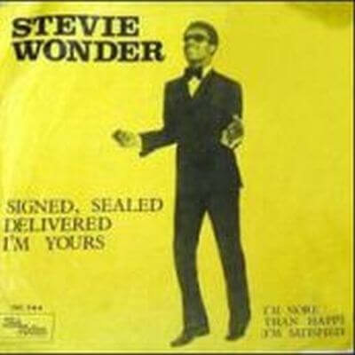

Video

"Signed, Sealed, Delivered I'm Yours" spent six weeks at number one on the U.S. RB chart and peaked at number three on the U.S. Pop chart. At 20 years old is the first time himself publish a single as producer. It is also the first time presents a backup singing group composed of Lynda Laurence Tucker (who later become a member of the group The Supremes), Syreeta Wright (co-author of the song), and Venetta Fields. Also marked the first Grammy nomination of stevie Wonder, and is an iconic song for Stevie.
In the biography of his mother, Lula Mae Hardaway, relates how with his son Stevie at the piano, a piece of melody, a bit of character, over and over again: "Here I am baby.... Here I am baby." and that was "Signed, sealed, and delivered. I'm yours". In a single phrase summarizing the existence of a lifetime, that of a mother willing to give his life for him. Has been the inspiration and the wick that has pushed perform last world tour Stevie Wonder, fulfilling the wish of his mother to Stevie was back in touch with fans and could express that unconditional surrender live with all those who enjoyed with the music of this man.
The song became an important political meaning when used in the presidential campaign of Barack
Obama, and there have been many versions of the song performed, of which highlight the version of Blue group, with the voices of Angie Stone and Stevie Wonder.

Lyrics
Like a fool I went and stayed too long
Now I'm wondering if your love's still strong
Oo baby, here I am, signed, sealed delivered, I'm yours
Then that time I went and said goodbye
Now I'm back and not ashamed to cry
Oo baby, here I am, signed, sealed delivered, I'm yours
Here I am baby
Oh, you've got the future in your hand
(signed, sealed delivered, I'm yours)
Here I am baby,
oh, you've got the future in your hand
(signed, sealed, delivered, I'm yours)
I've done alot of foolish things
that I really didn't mean
Hey, hey, yea, yea, didn't I, oh baby
Seen alot of things in this old world
When I touched them they did nothing, girl
Oo baby, here I am, signed, sealed delivered, I'm yours, oh I'm yours
Oo-wee babe you set my soul on fire
That's why I know you are my only desire
Oo baby, here I am, signed, sealed delivered, I'm yours
Here I am baby
Oh, you've got the future in your hand
(signed, sealed delivered, I'm yours)
Here I am baby,
oh, you've got the future in your hand
(signed, sealed, delivered, I'm yours)
I've done alot of foolish things
that I really didn't mean
I could be a broken man but here I am
With your future, got your future babe (here I am baby)
Here I am baby (signed, sealed delivered, I'm yours)
Here I am baby, (here I am baby)
Here I am baby (signed, sealed delivered, I'm yours)
Here I am baby, (here I am baby)
Here I am baby (signed, sealed delivered, I'm yours)